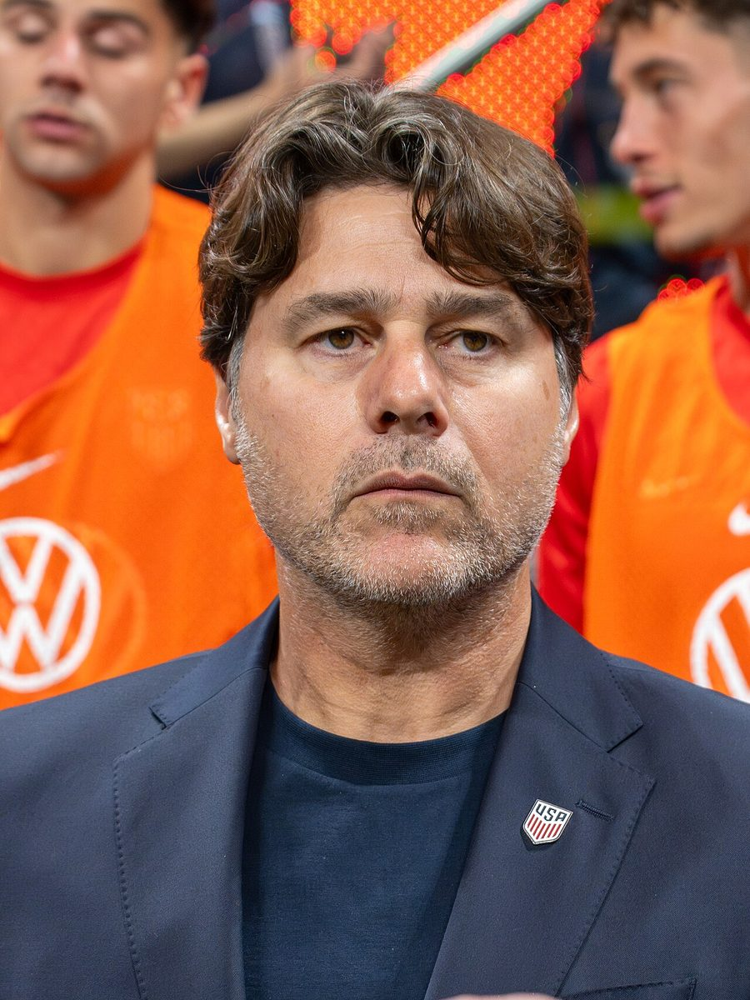

卡里克下课已成定局？曼联火速敲定波切蒂诺接掌帅印
红魔深陷英超降级区排在第18位，俱乐部高层已正式提议换帅。

突发事件
曼联目前正全力推进聘请毛里西奥·波切蒂诺出任新任主帅的协议谈判。在尚未正式官宣迈克尔·卡里克离任之前，红魔就已经对这位阿根廷名帅展开了实质性攻势。
曼联足球总监杰森·威尔考克斯（Jason Wilcox）与首席执行官奥马尔·贝拉达（Omar Berrada）专程前往摩纳哥，当面向负责俱乐部体育运营事务的小股东吉姆·拉特克利夫爵士提议解雇卡里克。此外，包含俱乐部控股方格雷泽家族代表在内的董事会全体会议定于本周三召开，届时预计将正式批准解雇卡里克的决定。

焦点解析
波切蒂诺目前正担任美国男足国家队主教练，原本肩负着带队征战各项大赛的重任。不过据多方消息透露，只要卡里克离职，阿根廷人非常渴望能够入主老特拉福德。曼联若想成行，就必须出资买断他与美国足协的国家队合同，而这无疑会在中北美及加勒比海国家联赛（Concacaf Nations League）大幕拉开之际，彻底打乱美国队的备战节奏。
对曼联而言，这一换帅动向折射出球队本赛季糟糕透顶的开局。现年45岁的卡里克始终无法让球队建立起稳定的表现，导致红魔一路滑落至降级区，迫使高层不得不转向寻找拥有丰富英超履历的顶级名帅。波切蒂诺此前曾在英超先后执教过南安普顿、托特纳姆热刺以及切尔西。
关键事实与核心数据
- 英超第18位： 曼联目前深陷英超降级区，保级警报已经拉响。
- 仅取1场联赛胜利： 本赛季卡里克在英超仅仅带队赢下一场球——即8月份击败伊普斯维奇，各项赛事加起来也仅录得3场胜利。
- 联赛杯惨遭淘汰： 曼联在9月份的英格兰联赛杯中被布莱顿淘汰出局。
- 1000万美元（约合750万英镑）： 这是波切蒂诺与美国国家队合同中的大致解约金数额；如果其合作多年的助教赫苏斯·佩雷斯（Jesús Pérez）及教练组随行，曼联所需支付的补偿金总额还将进一步上升。
- 16载并肩作战： 助教赫苏斯·佩雷斯与波切蒂诺的共事时间已长达16年之久。
后续进展
曼联董事会定于本周三举行会议，管理层预计届时将正式确认并对外公布卡里克下课的消息。与此同时，波切蒂诺原定仍将率领美国队出战接下来的中北美及加勒比海国家联赛：周六在迈阿密对阵海地，随后在下周三移师辛辛那提迎来次回合。如果曼联、波切蒂诺以及美国足协之间的谈判进展神速，红魔高层希望能在联赛重新开打之前彻底敲定新帅任命。